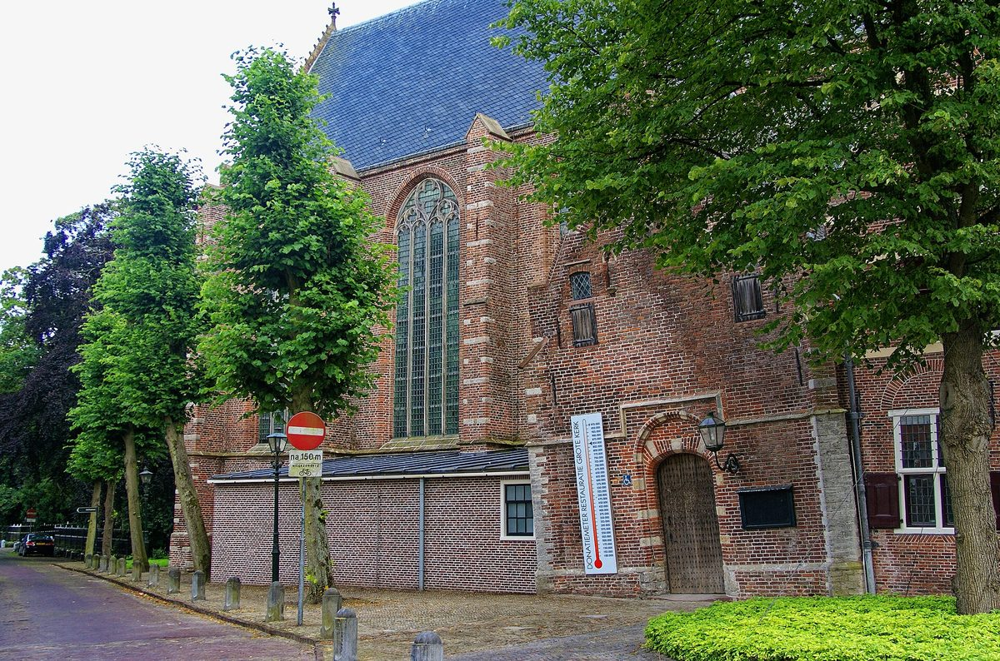

네덜란드 바털란트 풍력협동조합, 풍차 수익 3만 유로 동네 활동에 내놓는다…2027년부터 조합원 온라인 투표로 지원처 결정

모니켄담~마르컨 제방 풍차 2기를 가진 주민 조합, 단체당 최대 1,000유로·2월 28일까지 신청…스포츠·문화·돌봄 세 분야, 외로운 이웃 잇는 모임에 더 관심
네덜란드 북홀란트주의 주민 풍력협동조합 '바털란트 풍력협동조합(Coöperatie Windenergie Waterland, CWW)'이 풍차 수익 가운데 3만 유로를 바털란트와 에담폴렌담 두 기초자치단체의 동네 활동에 내놓는다. 조합은 모니켄담과 마르컨 사이 제방(De Nes)에 풍차 2기를 두고 '주민이 소유하고 주민을 위해 돌리는 풍차'를 내세워 해마다 수익 일부를 지역에 돌려 왔으며, 이번에는 동호회·재단·동네 모임이 2월 28일까지 단체당 최대 1,000유로를 신청할 수 있다. 지금까지는 조합 후원위원회가 신청을 한 건씩 심사했지만, 2027년부터는 모든 신청을 '후원예산(Sponsorbudget)' 한 차수로 모아 2027년 3월 8~28일 조합원이 온라인 투표로 지원 대상을 고른다. 지원 분야는 스포츠·운동, 예술·문화, 돌봄·만남 세 가지이며, 위원회는 산책 모임이나 동네 사랑방, 함께 하는 식사처럼 외로운 이웃을 잇는 돌봄·만남 활동이 더 많이 들어오기를 바란다고 밝혔다. 후원위원회의 하리 마르스(Harry Mars)는 풍차가 동네를 위해 돌아가는 만큼 "수익이 어디로 갈지 조합원이 정하는 게 당연하다"고 말했다. 조합원 수와 풍차 출력, 연간 수익 규모는 공개되지 않았다.
시민에너지 관점
풍차 2기에서 나온 3만 유로의 쓰임을 조합원 투표로 정하겠다는 것은 재생에너지 이익을 '받는 주민'에서 '정하는 주민'으로 한 걸음 옮기는 일이다. 단체당 1,000유로 안팎으로 쪼개면 효과가 작다는 지적이 나올 수 있지만, 외로운 이웃의 모임처럼 몇백 유로가 큰 차이를 내는 곳에 돈이 닿는다는 점이 오히려 동네 소유의 강점이다. 스코틀랜드 정부는 개발사가 지역에 내놓는 공동체 기금으로 1MW당 연 5,000파운드를 권고하지만 그 기금은 사업자가 내주는 돈이고, 주민이 발전소의 주인일 때라야 이익의 크기와 쓰임까지 주민이 정할 수 있다. 국내 주민참여형 발전사업도 배당에서 멈추지 말고, 지역 환원 몫의 쓰임을 주민이 투표로 정하는 장치부터 넣어야 한다.
출처: Noordhollands Dagblad 2026-10-27 기자 미표기 원문 보기
オランダ・ワーテルラントの風力協同組合、風車収益3万ユーロを地域活動に…2027年からは組合員のオンライン投票で支援先を決定
モニッケンダム～マルケン間の堤防に風車2基を持つ住民組合、1団体最大1,000ユーロ・2月28日まで申請受付…スポーツ・文化・ケアの3分野、孤立した住民をつなぐ活動に期待
オランダ北ホラント州の住民風力協同組合「ワーテルラント風力協同組合（Coöperatie Windenergie Waterland、CWW）」が、風車収益のうち3万ユーロをワーテルラントとエダム＝フォレンダムの2自治体の地域活動に拠出する。組合はモニッケンダムとマルケンの間の堤防（De Nes）に風車2基を持ち、「住民が所有し住民のために回す風車」として毎年収益の一部を地域に還元してきた。今回はクラブ・財団・地域グループが2月28日まで、1団体あたり最大1,000ユーロを申請できる。これまでは組合の後援委員会が申請を1件ずつ審査してきたが、2027年からはすべての申請を「後援予算（Sponsorbudget）」の1回の募集にまとめ、2027年3月8～28日に組合員がオンライン投票で支援先を選ぶ。対象はスポーツ・運動、芸術・文化、ケア・交流の3分野で、委員会は散歩の会や地域の集いの場、共同の食事など、孤立した住民をつなぐケア・交流の活動がもっと集まることを望むとしている。後援委員会のハリー・マルス（Harry Mars）氏は、風車は地域のために回っているのだから収益の行き先を組合員が決めるのは当然だと語った。組合員数や風車の出力、年間収益の規模は公表されていない。
市民エネルギーの視点
風車2基が生んだ3万ユーロの使い道を組合員の投票で決めることは、再生可能エネルギーの利益を「受け取る住民」から「決める住民」へと一歩進めるものだ。1団体1,000ユーロ前後に分ければ効果は小さいとの指摘もありうるが、孤立した住民の集まりのように数百ユーロが大きな違いを生む場所にお金が届くことこそ、地域所有の強みである。スコットランド政府は開発事業者が地域に拠出するコミュニティ基金として1MWあたり年5,000ポンドを推奨しているが、その基金は事業者が出すお金であり、住民が発電所の持ち主であってはじめて利益の大きさと使い道まで住民が決められる。韓国の住民参加型発電事業も配当で止まらず、地域還元分の使い道を住民が投票で決める仕組みから取り入れるべきだ。
出典: ノールトホランツ・ダッハブラット（Noordhollands Dagblad） 2026-10-27 記者名なし 原文を読む
荷兰瓦特兰风能合作社拿出风机收益3万欧元支持社区活动…2027年起由社员在线投票决定资助对象
在蒙尼克丹至马尔肯堤坝上拥有2台风机的居民合作社，每个团体最多1,000欧元、2月28日前申请…体育、文化、关怀三个领域，更希望支持联结孤独邻居的活动
荷兰北荷兰省的居民风能合作社"瓦特兰风能合作社"（Coöperatie Windenergie Waterland，CWW）将从风机收益中拿出3万欧元，用于瓦特兰和埃丹-福伦丹两个市镇的社区活动。合作社在蒙尼克丹与马尔肯之间的堤坝（De Nes）上拥有2台风机，以"居民所有、为居民运转的风机"为宗旨，每年把部分收益返还地方。这次，俱乐部、基金会和社区团体可在2月28日前申请，每个团体最多1,000欧元。此前由合作社的赞助委员会逐件审议申请，从2027年起，所有申请将汇总为一轮"赞助预算"（Sponsorbudget），并于2027年3月8日至28日由社员在线投票选出资助对象。资助领域为体育运动、艺术文化、关怀与交流三类，委员会表示希望有更多联结孤独邻居的关怀交流活动，例如散步小组、社区客厅和共餐。赞助委员会的Harry Mars表示，风机是为社区而转，因此由社员决定收益去向是理所当然的。合作社的社员人数、风机功率和年度收益规模均未公开。
市民能源视角
由社员投票决定2台风机带来的3万欧元怎么用，是把可再生能源收益从"接受的居民"推向"决定的居民"的一步。有人可能认为每个团体1,000欧元左右的分配效果有限，但正是这几百欧元能送到孤独邻居聚会这类最需要的地方，才体现出社区所有的优势。苏格兰政府建议开发商以每兆瓦每年5,000英镑的标准向当地提供社区基金，但这笔钱终究是开发商给出的，只有居民成为电站的主人，收益的多少和用途才能由居民决定。韩国的居民参与型发电项目也不应止于分红，应先建立由居民投票决定地方回馈资金用途的机制。
来源: 《Noordhollands Dagblad》 2026-10-27 未署名 查看原文
Dutch Waterland wind cooperative puts 30,000 euros of turbine income into local initiatives, with members voting online on recipients from 2027
The resident-owned cooperative with two turbines on the dike between Monnickendam and Marken offers up to 1,000 euros per group, applications until February 28; sport, culture and care are the three themes, with extra interest in projects for lonely neighbours
The Coöperatie Windenergie Waterland (CWW), a resident wind cooperative in the Dutch province of North Holland, is making 30,000 euros of its turbine income available to local initiatives in the municipalities of Waterland and Edam-Volendam. The cooperative owns two turbines on the dike at De Nes between Monnickendam and Marken, describes them as owned by and run for local residents, and returns part of its income to the area every year; this time clubs, foundations and neighbourhood groups can apply for up to 1,000 euros each until February 28. Until now the cooperative's sponsorship committee decided on applications one by one, but from 2027 all proposals will be gathered into a single "Sponsorbudget" round, and members will vote online from March 8 to 28, 2027 on which initiatives receive support. The three themes are sport and exercise, arts and culture, and care and togetherness, and the committee said it hopes to see more care and togetherness projects that bring lonely neighbours together, such as walking groups, neighbourhood living rooms and shared meals. Harry Mars of the sponsorship committee said that because the turbines turn for the neighbourhood, it is logical that members decide where the income goes. The cooperative's membership, turbine capacity and annual income were not disclosed.
Citizen Energy View
Letting members vote on how to spend 30,000 euros from two turbines moves residents one step from simply receiving the benefits of renewable energy to deciding on them. Some may argue that splitting the money into grants of around 1,000 euros limits its impact, but the strength of local ownership is precisely that a few hundred euros reach places where they make a big difference, such as gatherings for lonely neighbours. The Scottish Government recommends that developers pay community benefit funds of 5,000 pounds per MW per year, yet that money is still handed out by the developer; only when residents own the power plant can they decide both how large the returns are and how they are used. Resident-participation power projects in Korea should not stop at dividends, and should start by letting residents vote on how the local share of returns is spent.
Source: Noordhollands Dagblad 2026-10-27 No byline Read the original